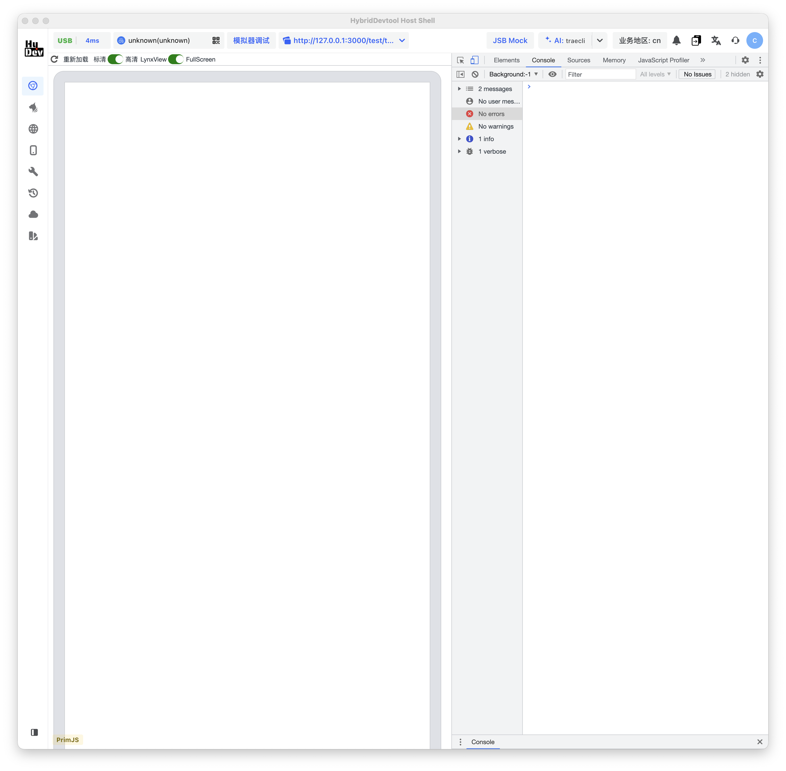
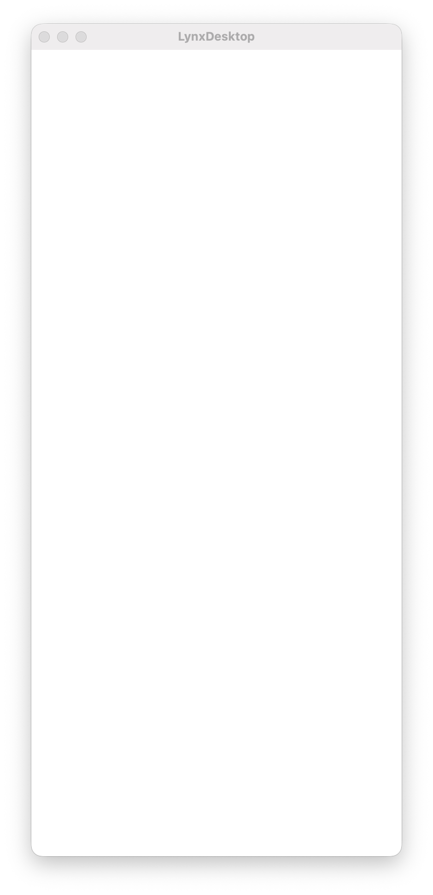
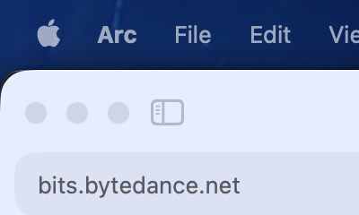
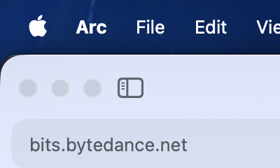

通过 app 名、bundle id、pid、title pattern、window id 定位目标窗口，适合 Chrome、LynxDesktop、HybridDevtool。
不是截图玩具，是 Agent 视觉入口。
核心设计是机器可控、可定位、可验证。每次 capture 都能返回窗口身份、坐标和图片路径。
支持窗口、矩形、全屏、主屏和指定 display 截图，输出 PNG/JPG/TIFF 等格式。
每次 locate/capture 输出结构化 JSON，包含 target、backend、window id、bounds、path、bytes、width、height。
支持 LynxDesktop/HybridDevtool 桌面窗口定位，并预留 lynx:headless 后端接入 DevTool smoke script。
真实截图，全部由 CLI 生成。
下面这些图片来自项目的 examples 目录，用同一套 target-first 命令生成。






Target DSL
Agent 不需要知道屏幕在哪里。它只要声明目标，Sightline 负责解析、定位、截图。
app:Google Chrome
bundle:com.google.Chrome
pid:29194
window:23188
rect:0,0,200,120
screen:main
display:2
lynx:headless,url:...
# 枚举窗口
bin/sightline list windows --json
# 定位 Chrome 并返回窗口坐标
bin/sightline locate --target 'app:Google Chrome' --json
# 截图 Chrome
bin/sightline capture --target 'app:Google Chrome' -o /tmp/chrome.png --json
# 截图 LynxDesktop
bin/sightline capture --target 'bundle:com.lynx.Desktop.LynxDesktop' -o /tmp/lynx.png --json
# 检查权限和 helper
bin/sightline doctor --jsonBun/TS 管产品层，Swift 管 macOS 事实。
TS 负责 CLI、target parser、JSON 协议和后端编排；Swift helper 负责 WindowServer 侧的窗口/显示器枚举和权限信号。
入口位于 bin/sightline，打包产物在 dist/sightline.js。命令包含 list、locate、capture、doctor。
使用 CoreGraphics/AppKit 获取 displays、windows、bundle id、bounds、权限状态。
窗口、矩形、屏幕和 display 截图统一走 macOS 原生命令，稳定复用系统权限模型。
桌面 Lynx 工具走窗口定位；headless Lynx 路径预留给 DevTool smoke script。